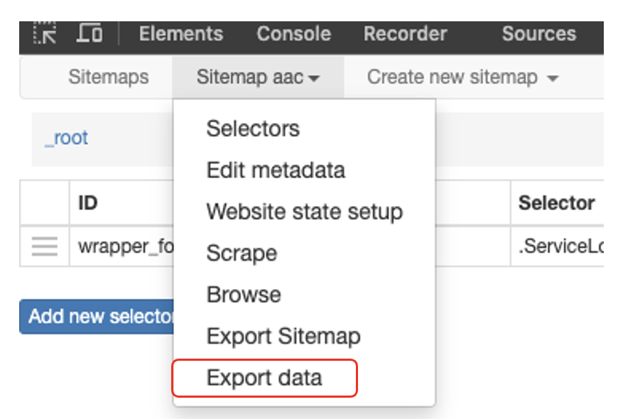
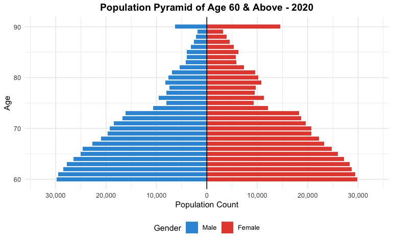
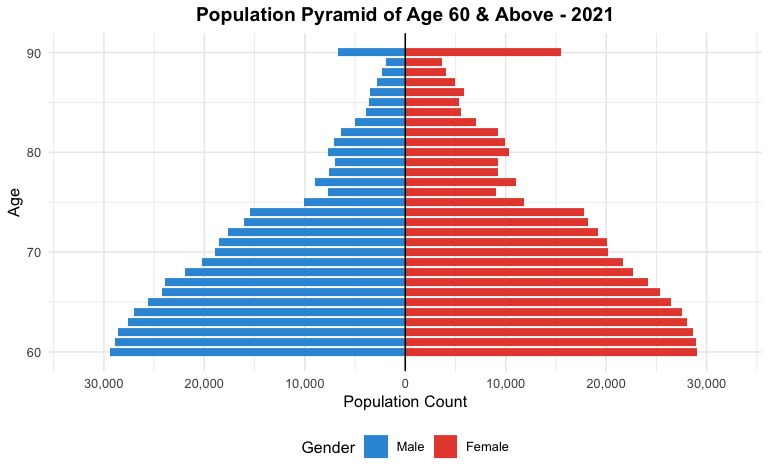
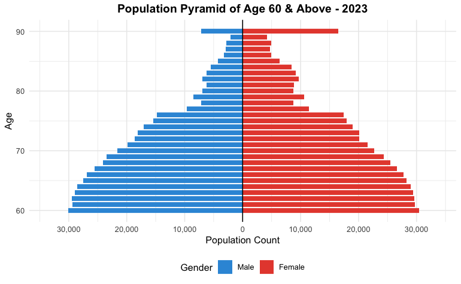
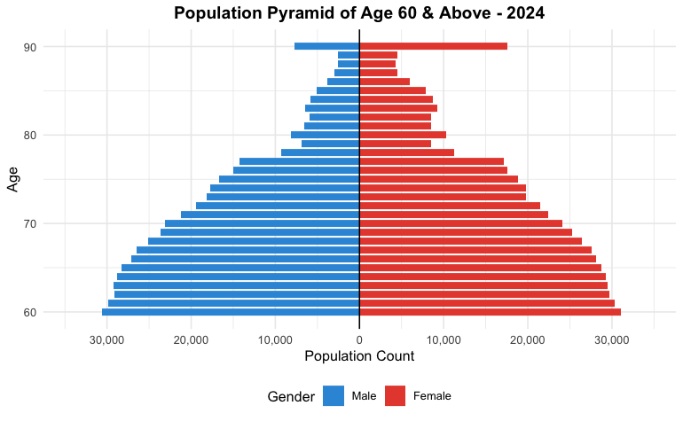
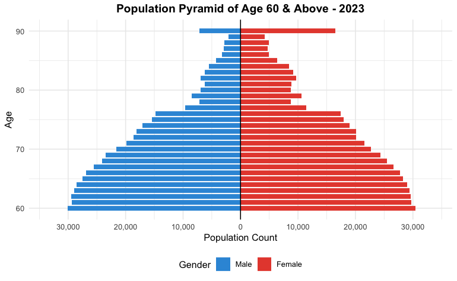
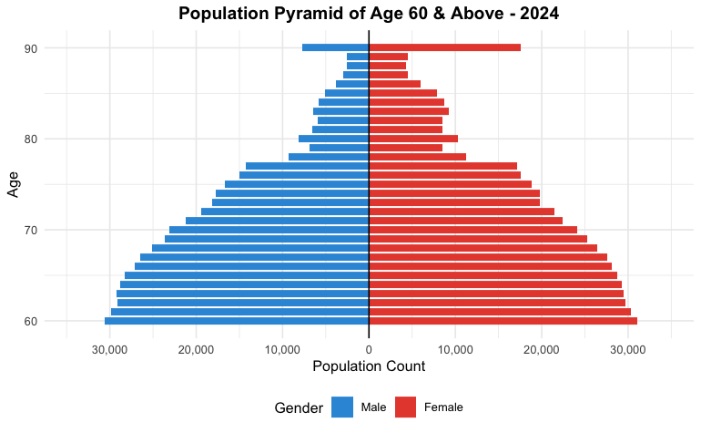

popdata24 <- read_csv("data/popdata/respopagesex2024.csv") %>%
rename_with(tolower)Data Preview
1 Overview - describe challenges
In this section, we will acquire the data sets from various government open-sources data repository and websites. Thereafter, we will install the necessary R packages and import the data sets. In each data set, we will delve into the necessary checks, issues faced and steps into resolving the issue. Thereafter, exploratory data analysis is done on a micro and macro level. In each proces
2 Data Acquisition
In this research, 3 main spectrum of data will be required for this research, namely the Population Data, Master Plan 2019 Subzone boundary and Care Centres. These datasets are gathered from multiple open-source websites which includes Singapore Department of Statistics, Data.gov.sg, and Agency of Integrated Care.

##Singapore Master Plan 2019 Subzone Boundary
The Singapore Master Plan 2019 Planning Subzone Boundary is a ESRI shapefile that is obtained from Data.gov.sg.
2.1 Population Data
The Singapore Resident by Planning Area/Subzone, Single Year of Age and Sex, June 2024 is selected for this
As the version January 2025 will be not be ready in due time for this research project, thus, the version of June 2024 is used.
2.2 WebScraping of Care Centres
Due to the lack of a centralised data of all care centres, web scraping is warranted in obtaining the information of the care centres. The geographical locations of the Care Centres alongside the centre names such as Active Ageing Centre, Day Care, Community Rehabilitation Centre, Centre-based Nursing were extracted using a web scraping tool, Web Scraper, available in Chrome web store as Seen in Figure x. As there is no centralised file that consist of the centre names and their locations, the location of each centre has to be manually extracted from the Care Services webpage of the Agency of Integrated Care as seen in Figure x.
Step 0: Download Web Scraper from Chrome web store
Web Scraper is used as it is free, works reasonably well and available in both Chrome and Firefox web store. In the below steps, Chrome will be the default web browser used.

Step 1: Navigate to Developer Tools in Chrome Web Browser
After downloading the extension from Chrome Web Store, press onto the menu bar at the right of the browser and locate Developer Tools while onto the website you would like to scrape information from.

Step 2: Interface for Webscraper
After clicking onto Developer Tools, click onto the Web Scraper in the menu bar (in black). Following which the below interface will appear.

Step 3: Create New Sitemap
Click onto “create new sitemap”, thereafter “Create Sitemap”. Sitemap Name will be the overarching term used for these information; in this instance, it will be AAC. The Start URL will be the HTML link that you would like the information to be scraped from.

Step 4: Add New Selector
After creating a new sitemap, the following interface will appear. Click onto the “Add new selector” to select the information to scrape.

Step 5: Selecting Whole Box
Firstly, the id will be the column name. For Type, select Element Attribute from the drop down selection. Thereafter, press on Select under Selector and select two boxes of each centre as seen in the figure below (the remaining boxes will be highlighted through its intelligent function) and press onto Done Selecting in the green box.

Step 6: Sitemap Interface
After adding a new selector, the sitemap page will appear the selector that you’ve inputted.

Step 7: Selecting Name of Care Centre
Firstly, the id will be name (with reference to the name of care centre), serving as the column name. Text will be chosen under Type thereafter press Select under Selector and highlight the first 2 names of the care centres (The remaining care centres will be highlighted through its intelligent function) and press onto Done selecting in the green box. Multiple box will be selected as we would like to scrap multiple names and root parent selector will be root and press onto Save Selector.

Step 8: Create New Sitemap
A popup window will be prompted and Group selectors was selected.

Step 9: Selecting Address of Care Centre
Similar to Step 7, the id will be address. Text will be chosen under Type thereafter press Select under Selector and highlight the first 2 addresses of the care centres (Remaining addresses will be highlighted through its intelligent function) and press onto Done selecting in the green box. Multiple box will be selected as we would like to scrap multiple addresses and parent selector will be wrapper_for_main_name (as we grouped selectors in step 8) and press onto Save Selector.

Step 10: Data Preview
Prior to data scraping, the data is previewed in ensuring each name of the care centre is correctly tagged to the address using the main website to verify.

Step 11: Commence Scraping
Head over to sitemap aac and click onto Scrape. A new browser will appear indicating that it is in process of scraping. It will be closed automatically once the process has ended.

Step 11: Export Data
Export data is selected upon clicking sitemap aac. 2 file options are offered: csv and xlsx. The former was chosen as CSV files are simple and portable which doesn’t complicate data processing. Thereafter the data will be downloaded.

Step 11: View CSV File
In ensuring the web scraping successful and accurate, the csv. file is opened and examined.

The above steps were repeated for each type of care centre. All of the Care Centre data were extracted on 7th February 2025.
3 Data Cleaning & Manipulation
3.1 Installing Packages
3.2 Population Data
3.2.1 Overview
In this section, a total of 4 population datasets from year 2020 to year 2024 will be used in the analysis. The datasets will be cleaned. Survival analysis will be done in estimating the population for age 60 and above for the period 2025 to 2029.
3.2.2 Importing Data
In importing data, read_csv() and rename_with() of tidyverse package are used to perform column name standardisation by converting all variable names in the respective datasets to lowercase.
Singapore Residents by Planning Area / Subzone, Single Year of Age and Sex, June 2024
Singapore Residents by Planning Area / Subzone, Single Year of Age and Sex, June 2023
popdata23 <- read_csv("data/popdata/respopagesex2023.csv") %>%
rename_with(tolower)Singapore Residents by Planning Area / Subzone, Single Year of Age and Sex, June 2022
popdata22 <- read_csv("data/popdata/respopagesex2022.csv") %>%
rename_with(tolower)
Warning
PARSING ERROR*
Warning: One or more parsing issues, call `problems()` on your data frame for details, e.g.:
dat <- vroom(...)
problems(dat)Rows: 60424 Columns: 6── Column specificationSingapore Residents by Planning Area / Subzone, Single Year of Age and Sex, June 2021
popdata21 <- read_csv("data/popdata/respopagesex2021.csv") %>%
rename_with(tolower)Singapore Residents by Planning Area / Subzone, Single Year of Age and Sex, June 2011-2020
popdata20 <- read_csv("data/popdata/respopagesex2011to2020.csv") %>%
rename_with(tolower) %>%
filter(time == 2020)glimpse(popdata23)3.2.3 Checking for Missing Values
To check for missing or null values in the name and address columns of each dataset, the code uses the summarise() function from the dplyr package. The summarise() function computes summary statistics for the specified columns, which in this case are name and address. The across() function is used to apply the sum(is.na(.)) operation to both columns simultaneously, counting the number of missing (NA) values in each column.
The is.na() function checks whether each value in the name and address columns is missing or null, returning TRUE for missing values and FALSE for non-missing values. The sum() function then counts the number of TRUE values, which corresponds to the number of missing values in each column. This process is applied to each dataset (aac, counselling, daycare, dementia, hospice, maintenance, nhrespite, nursing, and rehab). In conclusion it is able to identify the number of missing values in the name and address columns across all datasets, which helps assess the completeness of the data and highlights any issues that may require cleaning or imputation before further analysis. It returns 0 missing values.
Results: We noticed that there are 30 missing values popdata22 specifically under the column pop.
popdata20_missing <- popdata20 %>% summarise(across(c(pa,sz,age,sex,pop,time), ~sum(is.na(.))))
print(popdata20_missing)
popdata21_missing <- popdata21 %>% summarise(across(c(pa,sz,age,sex,pop,time), ~sum(is.na(.))))
print(popdata21_missing)
popdata22_missing <- popdata22 %>% summarise(across(c(pa,sz,age,sex,pop,time), ~sum(is.na(.))))
print(popdata22_missing)
popdata23_missing <- popdata23 %>% summarise(across(c(pa,sz,age,sex,pop,time), ~sum(is.na(.))))
print(popdata23_missing)
popdata24_missing <- popdata24 %>% summarise(across(c(pa,sz,age,sex,pop,time), ~sum(is.na(.))))
print(popdata24_missing)3.2.4 Issue with POPDATA22
Using the below code, we are able to see clearly the rows that are affected and in the pop column, it appears as NA. The csv file (respopagesex2022.csv) was opened using excel and each row returned in the below output was then cross checked in excel. Whole numbers with comma appeared in excel. This may be because read_csv() function expects a numeric value (double) in one of the columns, but instead, it found a string (the values in the column are likely formatted with commas, such as “1,020”). This is why the parser is raising an issue earlier on.
na_rows <- popdata22[is.na(popdata22$pop), ]
print(na_rows)Referencing from Stackoverflow, the first line of the code is necessary as it defines a new class called "num.with.commas". This class is intended to handle numeric values that are stored as strings with commas (e.g., "1,000"). Thereafter, the second line of the code defines a method to convert a character type to the custom "num.with.commas" class.
The
gsub(",", "", from)function removes commas from the string (e.g.,"1,000"becomes"1000")The
as.numeric()function then converts the cleaned string into a numeric value (e.g.,"1000"becomes1000)
This ensures that numbers with commas are properly converted to numeric values during data import.
setClass("num.with.commas")
setAs("character", "num.with.commas",
function(from) as.numeric(gsub(",", "", from) ) )The file is then re-imported again and specifically, the column ‘pop’ is parsed as a character field in facilitating the next step in removing commas within the population itself.
popdata22 <- read_csv("data/popdata/respopagesex2022.csv",
col_types = cols(
PA = col_character(),
SZ = col_character(),
Age = col_character(),
Sex = col_character(),
Pop = col_character(),
Time = col_number() # Adjust if necessary
)) %>%
rename_with(tolower)As previously stated, commas are present in the ‘pop’ column, hence, mutate()
popdata22 <- popdata22 %>%
mutate(pop = as.numeric(str_replace_all(pop, ",", "")))In the below codechunk, it was verified that there is no missing values and the above steps taken were successful.
names(popdata22) <- tolower(names(popdata22))
popdata22_missing <- popdata22 %>% summarise(across(c(pa,sz,age,sex,pop,time), ~sum(is.na(.))))
print(popdata22_missing)In the below code chunk a & b, we noticed that it returned two different outputs: 90_and_over and 90_and_Over. This may explain why the error NAs introduced by coercion was returned.
#code chunk a
popdata22 %>%
summarise(max_age = max(age, na.rm = TRUE))#code chunk b
popdata24 %>%
summarise(max_age = max(age, na.rm = TRUE))Hence, in addressing the above issue, the below code chunk was developed. First, The code defines a function called convert_age that takes a dataframe (df) as input. Inside the function, it modifies the age column using mutate(). It checks each value in the age column to see if it contains either “_and_over” or “_and_Over” (case-insensitive match). When a match is found, it extracts just the numeric part (e.g., “90” from “90_and_over”) using str_extract(). If no match is found, it keeps the original value. The second mutate() converts the cleaned age column to numeric values, ensuring all ages are stored as numbers. The function returns the modified dataframe with standardised age values.
convert_age <- function(df) {
df %>%
mutate(age = if_else(
str_detect(age, regex("_and_Over|_and_over", ignore_case = TRUE)),
str_extract(age, "\\d+"), # Extract just the numeric part
age
)) %>%
mutate(age = as.numeric(age))
}popdata20_c <- convert_age(popdata20)popdata21_c <- convert_age(popdata21)popdata22_c <- convert_age(popdata22)popdata23_c <- convert_age(popdata23)popdata24_c <- convert_age(popdata24)Another layer of confirmation of missing values was executed in ensuring no missing values were returned during the abovementioned process and it returns 0 for each dataset.
popdata20_missing <- popdata20_c %>% summarise(across(c(pa,sz,age,sex,pop,time), ~sum(is.na(.))))
print(popdata20_missing)
popdata21_missing <- popdata21_c %>% summarise(across(c(pa,sz,age,sex,pop,time), ~sum(is.na(.))))
print(popdata21_missing)
popdata22_missing <- popdata22_c %>% summarise(across(c(pa,sz,age,sex,pop,time), ~sum(is.na(.))))
print(popdata22_missing)
popdata23_missing <- popdata23_c %>% summarise(across(c(pa,sz,age,sex,pop,time), ~sum(is.na(.))))
print(popdata23_missing)
popdata24_missing <- popdata24_c %>% summarise(across(c(pa,sz,age,sex,pop,time), ~sum(is.na(.))))
print(popdata24_missing)3.2.5 Returning rows where pop is o
# Return all rows where 'pop' is exactly 0
popdata24_c %>%
filter(age>=60, pop==0)popdata23_c %>%
filter(age>=60, pop==0)popdata22_c %>%
filter(age>=60, pop==0)popdata21_c %>%
filter(age>=60, pop==0)popdata20_c %>%
filter(age>=60, pop==0)3.2.6 Duplicate Check
The code provided checks for duplicate rows in each dataset by grouping the dataset by all columns using group_by_all(). It then filters out the rows that have duplicate combinations of values across all columns using filter(n() > 1). The n() function counts the number of occurrences for each combination of values, and filter(n() > 1) keeps only the rows that appear more than once (i.e., duplicates).
For each dataset, the nrow() function is used to check if there are any rows returned after filtering for duplicates. If there are duplicates (i.e., the number of rows is greater than zero), the dataset with the duplicate rows is returned. However, if no duplicates are found (i.e., nrow() equals zero), the code returns 0 to indicate that there are no duplicates in that dataset.
Thus, the code either returns the rows with duplicate values or 0 if no duplicates are present, providing an indication of whether duplicate entries exist in each dataset.
# Check for duplicates in 'aac'
popdata20_duplicate <- popdata20_c %>%
group_by_all() %>%
filter(n() > 1) %>%
ungroup()
show(popdata20_duplicate)
# Check for duplicates in 'counselling'
popdata21_duplicate <- popdata21_c %>%
group_by_all() %>%
filter(n() > 1) %>%
ungroup()
show(popdata21_duplicate)
# Check for duplicates in 'daycare'
popdata22_duplicate <- popdata22_c %>%
group_by_all() %>%
filter(n() > 1) %>%
ungroup()
show(popdata22_duplicate)
# Check for duplicates in 'dementia'
popdata23_duplicate <- popdata23_c %>%
group_by_all() %>%
filter(n() > 1) %>%
ungroup()
show(popdata23_duplicate)
# Check for duplicates in 'hospice'
popdata24_duplicate <- popdata24_c %>%
group_by_all() %>%
filter(n() > 1) %>%
ungroup()
show(popdata24_duplicate)3.2.7 EDA of Population Data
### Step 1: Define a function to filter and aggregate age distribution data
get_age_distribution <- function(data, min_age = 60, max_age = 90) {
data %>%
filter(age >= min_age & age <= max_age) %>%
group_by(time, age, sex) %>%
summarise(total_pop = sum(pop), .groups = "drop")
}### Step 2: Use the function to process data
age_dist <- get_age_distribution(popdata20_c) # Default: ages 60-90
### Step 3: Plot age distributions by year and sex
plot_age_distribution <- function(age_data) {
ggplot(age_data, aes(x = age, y = total_pop, fill = sex)) +
geom_bar(stat = "identity", position = "dodge") +
facet_wrap(~time, scales = "free_y") +
labs(
title = "Age Distribution (60-90 Years) by Sex and Year",
x = "Age",
y = "Total Population",
fill = "Sex"
) +
scale_x_continuous(breaks = seq(60, 90, by = 5)) +
theme_minimal() +
theme(legend.position = "bottom")
}
# Generate the plot
plot_age_distribution(age_dist)In generating the population pyramid, the below oko
#load data
get_age_distribution <- function(data, min_age = 60, max_age = 90) {
data %>%
filter(age >= min_age & age <= max_age) %>%
mutate(
# Standardize sex labels to match your data
sex = factor(sex, levels = c("Males", "Females"))
) %>%
group_by(time, age, sex) %>%
summarise(total_pop = sum(pop), .groups = "drop")
}#2020
age_dist <- get_age_distribution(popdata20_c)
# 3. Create population pyramid plot function
plot_population_pyramid <- function(age_data, plot_year = max(age_data$time)) {
# Filter and transform data
plot_data <- age_data %>%
filter(time == plot_year) %>%
mutate(total_pop = ifelse(sex == "Males", -total_pop, total_pop))
# Calculate axis limits
max_pop <- max(abs(plot_data$total_pop))
ggplot(plot_data, aes(x = age, y = total_pop, fill = sex)) +
geom_bar(stat = "identity", width = 0.8) +
geom_hline(yintercept = 0, color = "black") +
coord_flip() +
scale_y_continuous(
labels = function(x) comma(abs(x)),
breaks = pretty_breaks(n = 6),
limits = c(-max_pop * 1.1, max_pop * 1.1)
) +
scale_fill_manual(
values = c("Males" = "#3498db", "Females" = "#e74c3c"),
labels = c("Males" = "Male", "Females" = "Female") # Optional: display cleaner labels
) +
labs(
title = paste("Population Pyramid of Age 60 & Above -", plot_year),
x = "Age",
y = "Population Count",
fill = "Gender"
) +
theme_minimal() +
theme(
plot.title = element_text(hjust = 0.5, face = "bold"),
legend.position = "bottom"
)
}
# 4. Generate and save the plot ------------------------------------------------
final_plot <- plot_population_pyramid(age_dist)
print(final_plot)3.2.8 Testing for Missing Values
# Compare means of other variables between zero/non-zero groups
pop20_i %>%
group_by(zero_pop = (pop == 0)) %>%
summarise(across(c(age, time), mean))3.2.9 Percentage of Missing Values
pop20
pop20_geri <- pop20 %>%
filter(age>=60)zero_pop20 <- pop20 %>%
filter(pop == 0, age>=60)(nrow(zero_pop20) / nrow(pop20_geri)) * 100pop21
pop21_geri <- pop21 %>%
filter(age>=60)zero_pop21 <- pop21 %>%
filter(pop == 0, age>=60)(nrow(zero_pop21) / nrow(pop21_geri)) * 100pop22
pop22_geri <- pop22 %>%
filter(age>=60)zero_pop22 <- pop22 %>%
filter(pop == 0, age>=60)(nrow(zero_pop22) / nrow(pop22_geri)) * 100pop23
pop23_geri <- pop23 %>%
filter(age>=60)zero_pop23 <- pop23 %>%
filter(pop == 0, age>=60)(nrow(zero_pop23) / nrow(pop23_geri)) * 100pop24
pop24_geri <- pop24 %>%
filter(age>=60)zero_pop24 <- pop24 %>%
filter(pop == 0, age>=60)(nrow(zero_pop24) / nrow(pop24_geri)) * 1003.2.10 Imputation
# Create zero indicator
pop20_i <- pop20 %>%
mutate(
zero_pop = (pop == 0),
log_pop = ifelse(pop > 0, log(pop), NA) # For visualization
)# Check zero patterns
zero_summary <- pop20_i %>%
filter(age>=60) %>%
group_by(pa, sz, age, sex) %>%
summarise(
n_zeros = sum(zero_pop),
prop_zeros = mean(zero_pop),
.groups = 'drop'
)# Visualize zeros
ggplot(zero_summary, aes(x = age, y = prop_zeros, fill = sex)) +
geom_boxplot() +
facet_wrap(~pa) +
labs(title = "Proportion of Zero Population by Demographics")ggplot(pop20_i, aes(x=time, y=pop)) +
geom_point(alpha=0.5) +
facet_grid(sex ~ age) +
labs(title="Population Distribution by Demographics")3.2.11 Survival Analysis
     ### Survival Analysis from 2025 - 2030
  ### Survival Analysis from 2025 - 2030
3.2.11.1 Introduction
In this section,
The aim of this is to calculate the sruvival rate, in this instance, death is the event of interest.
As the population data is used, we will assume that the data is non-parametric in nature. Kaplan-Meier
It is assumed that residents will stay in the same address with in relation to their subzones throughout the study period. Hence, if there is a decrease of population in the subzone, the reasonable explanation of this outcome is death.
This code defines a function called clean_age_column that takes a dataframe (df) as input and processes its age column to ensure consistent numeric values. The function uses the %>% (pipe) operator from the dplyr package to chain a series of data transformations. First, it trims any leading or trailing whitespace from the age column using str_trim. Next, it replaces the label "90_and_over" with "90" to standardize the representation of ages 90 and above. Then, it converts the age column to numeric values using as.numeric, while suppressing any warnings that might arise from non-numeric entries (e.g., empty strings or invalid values). Finally, the function filters out any rows where the age could not be converted to a numeric value (resulting in NA), ensuring only valid numeric ages remain in the dataframe. The cleaned dataframe is then returned as the output. This function is useful for preparing age data for analysis by ensuring uniformity and removing invalid entries.
clean_age_column <- function(df) {
df %>%
mutate(
age = str_trim(age), # Trim whitespace
age = if_else(age == "90_and_over", "90", age), # Replace label
age = suppressWarnings(as.numeric(age)) # Convert safely
) %>%
filter(!is.na(age)) # Remove rows that still couldn't be converted
}3.2.11.2 Step 1: Load data
Firstly, we will read the rds file. Thereafter, we will apply `clean_age_column()` function that was defined earlier to the loaded dataframe.
pop20 <- read_rds("data/rds/popdata/refined/popdata20_c.rds") %>%
clean_age_column()
pop21 <- read_rds("data/rds/popdata/refined/popdata21_c.rds") %>%
clean_age_column()
pop22 <- read_rds("data/rds/popdata/refined/popdata22_c.rds") %>%
clean_age_column()
pop23 <- read_rds("data/rds/popdata/refined/popdata23_c.rds") %>%
clean_age_column()
pop24 <- read_rds("data/rds/popdata/refined/popdata24_c.rds") %>%
clean_age_column()3.2.11.3 Step 2: Compute survival rates for each year-to-year transition
This code defines a function called compute_survival_rate that calculates survival rates between two consecutive time periods (e.g., years) for a population dataset. The function takes two dataframes (df1 and df2) as inputs, representing population data from two different time points (e.g., 2020 and 2021).
First, the function filters df1 to include only individuals aged 59 to 90, as survival analysis is often focused on older populations. It then increments the age by 1 (using mutate(age = age + 1)) to align the ages with the next time period (df2). Next, it performs an inner join between the modified df1 and df2 using matching columns (age, sex, pa [possibly a region code], and sz. The join suffixes (_prev and _next) distinguish between the population counts from the two time periods.
After joining, the function computes the survival rate (rate) by dividing the population in the later period (pop_next) by the population in the earlier period (pop_prev). Finally, it selects and returns only the relevant columns (pa, sz, age, sex, rate, pop_prev, pop_next) for further analysis.
In summary, this function helps estimate how many people from an initial cohort (in df1) survived into the next period (in df2) by age, sex, and other groupings, providing key insights for demographic or actuarial studies.
compute_survival_rate <- function(df1, df2) {
df1 %>%
filter(age >= 59 & age < 91) %>%
mutate(age = age + 1) %>%
inner_join(df2,
by = c("age", "sex", "pa", "sz"),
suffix = c("_prev", "_next")) %>%
mutate(rate = pop_next / pop_prev) %>%
select(pa, sz, age, sex, rate, pop_prev, pop_next)
}rates_2020_2021 <- compute_survival_rate(pop20, pop21)invalid_rates_2020_2021 <- rates_2020_2021 %>%
filter(!between(rate, 0, 1) | is.na(rate) | is.infinite(rate))
invalid_rates_rowsrates_2021_2022 <- compute_survival_rate(pop21, pop22)invalid_rates_2021_2022 <- rates_2021_2022 %>%
filter(!between(rate, 0, 1) | is.na(rate) | is.infinite(rate))
invalid_rates_rowsrates_2022_2023 <- compute_survival_rate(pop22, pop23)invalid_rates_2022_2023 <- rates_2022_2023 %>%
filter(!between(rate, 0, 1) | is.na(rate) | is.infinite(rate))
invalid_rates_rowsrates_2023_2024 <- compute_survival_rate(pop23, pop24)invalid_rates_2023_2024 <- rates_2023_2024 %>%
filter(!between(rate, 0, 1) | is.na(rate) | is.infinite(rate))
invalid_rates_rows3.2.12 Step 2: Refined
The function processes survival rate data through four sequential steps, now correctly using dplyr’s grouping mechanism. First, it groups the data by both age and sex, which is crucial because survival rates likely vary significantly across these demographics. Within these groups, it performs three key operations: (1) capping any rates above 1.0 at 1.0 (assuming these represent survival probabilities that shouldn’t exceed 100%), (2) replacing infinite values (which occur when dividing by zero) with the maximum finite rate found in the data, and (3) imputing missing values (NaN) with the median rate for that specific age-sex group. After these grouped operations, it ungroups the data and performs a final safety check, replacing any remaining missing values with 1.0 (a neutral value indicating no change).
compute_survival_rate <- function(df1, df2) {
df1 %>%
filter(age >= 59 & age < 91) %>%
mutate(age = age + 1) %>%
inner_join(df2,
by = c("age", "sex", "pa", "sz"),
suffix = c("_prev", "_next")) %>%
mutate(rate = pop_next / pop_prev) %>%
select(pa, sz, age, sex, rate, pop_prev, pop_next)
}refined (tried)
clean_rates <- function(df, rate_type = "survival") {
df %>%
group_by(age, sex) %>%
mutate(
# Handle infinites first - replace with NA for proper imputation
rate = ifelse(is.infinite(rate), NA, rate),
# Cap rates only if they represent probabilities
rate = if(rate_type == "survival" || rate_type == "probability") {
pmin(pmax(rate, 0), 1) # Bound between 0 and 1
} else {
pmax(rate, 0) # Only ensure non-negative for hazard rates
},
# Impute missing values with group median
rate = ifelse(is.na(rate), median(rate, na.rm = TRUE), rate)
) %>%
ungroup() %>%
# Final check - if entire groups had no valid data
mutate(
rate = ifelse(is.na(rate),
if(rate_type == "survival") 1.0 else 0.0,
rate)
)
}?
clean_rates <- function(df) {
df %>%
group_by(age, sex) %>%
mutate(
# Step 1: Cap rates >1.0 at 1.0 (if survival probability)
rate = ifelse(rate > 1.0 & !is.na(rate), 1.0, rate),
# Step 2: Replace Inf with max finite rate
rate = ifelse(is.infinite(rate), max(rate[is.finite(rate)], na.rm = TRUE), rate),
# Step 3: Impute NaN with group median (now works because we're grouped)
rate = ifelse(is.na(rate), median(rate, na.rm = TRUE), rate)
) %>%
ungroup() %>%
# Step 4: Fill any remaining NaN with 1.0 (after ungrouping)
mutate(rate = ifelse(is.na(rate), 1.0, rate))
}claude version
clean_survival_rates <- function(df) {
df %>%
group_by(age, sex) %>%
mutate(
# Handle infinites first - replace with NA for proper imputation
rate = ifelse(is.infinite(rate), NA, rate),
# Bound survival rates between 0 and 1
rate = pmin(pmax(rate, 0), 1),
# Impute missing values with group median
rate = ifelse(is.na(rate), median(rate, na.rm = TRUE), rate)
) %>%
ungroup() %>%
# Final imputation for any remaining NAs (if entire groups had no valid data)
mutate(rate = ifelse(is.na(rate), 1.0, rate))
}3.2.13 Step 2 refined by Claude
compute_survival_rate <- function(df1, df2) {
df1 %>%
filter(age >= 59 & age < 91) %>%
mutate(age = age + 1) %>%
inner_join(df2,
by = c("age", "sex", "pa", "sz"),
suffix = c("_prev", "_next")) %>%
mutate(rate = pop_next / pop_prev) %>%
select(pa, sz, age, sex, rate, pop_prev, pop_next)
}# Stochastic regression imputation function
stochastic_impute_rates <- function(df, rate_type = "survival") { # Step 1: Prepare data for imputation
df_clean <- df %>%
mutate(
# Handle infinites and zeros in denominator
rate = case_when(
is.infinite(rate) ~ NA_real_,
pop_prev == 0 ~ NA_real_, # Can't compute rate with zero denominator
TRUE ~ rate
),
# Create indicator for missingness
rate_missing = is.na(rate),
# Log transform population for better modeling (add small constant to avoid log(0))
log_pop_prev = log(pop_prev + 0.1),
log_pop_next = log(pop_next + 0.1)
) # Step 2: Only proceed with imputation if we have missing values
if (!any(df_clean$rate_missing)) {
message("No missing values found. Returning original data with bounds applied.")
return(apply_rate_bounds(df_clean, rate_type))
} # Step 3: Fit regression model for imputation
# Use available predictors: age, sex, pa, log_pop_prev
complete_cases <- df_clean %>% filter(!rate_missing)
if (nrow(complete_cases) < 10) {
warning("Too few complete cases for reliable regression imputation. Using group medians.")
return(fallback_imputation(df_clean, rate_type))
}
# Fit the regression model
imputation_model <- tryCatch({
if (rate_type == "survival") {
# Logistic regression for survival rates (bounded 0-1)
# Transform rate to logit scale for modeling
complete_cases_trans <- complete_cases %>%
mutate(
# Ensure rates are in (0,1) for logit transformation
rate_bounded = pmin(pmax(rate, 0.001), 0.999),
logit_rate = log(rate_bounded / (1 - rate_bounded))
)
lm(logit_rate ~ age + sex + pa + log_pop_prev,
data = complete_cases_trans)
} else {
# Linear regression for other rate types
lm(rate ~ age + sex + pa + log_pop_prev,
data = complete_cases)
}
}, error = function(e) {
warning("Regression model failed. Using group medians.")
return(NULL)
})
if (is.null(imputation_model)) {
return(fallback_imputation(df_clean, rate_type))
}
# Step 4: Get model statistics for adding stochastic component
model_sigma <- sigma(imputation_model) # Residual standard error
# Step 5: Predict missing values
missing_cases <- df_clean %>% filter(rate_missing)
if (nrow(missing_cases) > 0) {
predicted_values <- tryCatch({
predict(imputation_model, newdata = missing_cases)
}, error = function(e) {
warning("Prediction failed. Using group medians.")
return(NULL)
})
if (!is.null(predicted_values)) {
# Add stochastic component (random noise)
set.seed(123) # For reproducibility
random_error <- rnorm(length(predicted_values), mean = 0, sd = model_sigma)
stochastic_predictions <- predicted_values + random_error
# Transform back if using logistic regression
if (rate_type == "survival") {
# Convert from logit back to probability scale
stochastic_predictions <- exp(stochastic_predictions) / (1 + exp(stochastic_predictions))
}
# Fill in the missing values
df_clean$rate[df_clean$rate_missing] <- stochastic_predictions
}
}
# Step 6: Apply appropriate bounds and return
return(apply_rate_bounds(df_clean, rate_type))
}
# Helper function to apply rate bounds
apply_rate_bounds <- function(df, rate_type) {
df %>%
mutate(
rate = case_when(
rate_type == "survival" | rate_type == "probability" ~ pmin(pmax(rate, 0), 1),
TRUE ~ pmax(rate, 0) # Only ensure non-negative for hazard rates
)
) %>%
select(-rate_missing, -log_pop_prev, -log_pop_next) # Remove helper columns
}
# Fallback function using group medians when regression fails
fallback_imputation <- function(df, rate_type) {
message("Using fallback group median imputation.")
df %>%
group_by(age, sex) %>%
mutate(
rate = ifelse(rate_missing, median(rate, na.rm = TRUE), rate)
) %>%
ungroup() %>%
# Final check - if entire groups had no valid data
mutate(
rate = ifelse(is.na(rate),
ifelse(rate_type == "survival", 1.0, 0.0),
rate)
) %>%
select(-rate_missing, -log_pop_prev, -log_pop_next)
}
# Updated main function (replaces your clean_rates function)
clean_rates <- function(df, rate_type = "survival") {
stochastic_impute_rates(df, rate_type)
}
# Example usage:
# survival_rates <- compute_survival_rate(pop20_t1, pop20_t2)
# clean_survival_rates <- clean_rates(survival_rates, rate_type = "survival")rates_2020_2021 <- compute_survival_rate(pop20, pop21) %>% clean_rates()rates_2021_2022 <- compute_survival_rate(pop21, pop22) %>% clean_rates()rates_2022_2023 <- compute_survival_rate(pop22, pop23) %>% clean_rates()rates_2023_2024 <- compute_survival_rate(pop23, pop24) %>% clean_rates()3.2.14 Step 3: Average the survival rates
avg_survival_rates <- bind_rows(
rates_2020_2021,
rates_2021_2022,
rates_2022_2023,
rates_2023_2024
) %>%
group_by(age, sex, pa, sz) %>%
summarise(avg_rate = mean(rate, na.rm = TRUE), .groups = "drop")3.2.15 Step 4: Forecast each year 2025 to 2029
forecast_year <- function(base_pop, rates, year) {
next_pop <- base_pop %>%
filter(age >= 59 & age < 90) %>%
mutate(age = age + 1) %>%
left_join(rates, by = c("age", "sex", "pa", "sz")) %>%
mutate(pop = pop * avg_rate) %>%
select(age, sex, pa, sz, pop)
# Handle 90+
age_89 <- base_pop %>%
filter(age == 89) %>%
select(sex, pa, sz, pop) %>%
mutate(age = 90)
age_90plus <- base_pop %>%
filter(age == 90) %>%
select(sex, pa, sz, pop)
pop_90 <- bind_rows(age_89, age_90plus) %>%
group_by(sex, pa, sz) %>%
summarise(age = 90, pop = sum(pop), .groups = "drop")
bind_rows(next_pop, pop_90) %>%
mutate(year = year) %>%
arrange(pa, sz, sex, age)
}3.2.16 Step 5: Loop over the years
# List to store forecasts
forecast_list <- list()
base_pop <- pop24
for (y in 2025:2029) {
next_forecast <- forecast_year(base_pop, avg_survival_rates, y)
forecast_list[[as.character(y)]] <- next_forecast
base_pop <- next_forecast %>% select(pa, sz, age, sex, pop)
}3.2.17 Final Output of Population Forecast
all_forecasts <- bind_rows(forecast_list)pivoted_data <- all_forecasts %>%
pivot_wider(
names_from = year,
values_from = pop,
names_prefix = "aged_",
names_glue = "aged_{year}",
)pivoted_data <- all_forecasts %>%
pivot_wider(
names_from = year,
values_from = pop,
names_prefix = "aged_",
names_glue = "aged_{year}",
values_fn = list(pop = list) # Keeps multiple values as lists
)pivot_data <- all_forecasts %>%
pivot_wider(
names_from = year, # Pivot based on the 'label' column
names_prefix = "aged_",
names_glue = "aged_{year}"
)REGRESSION
# Create missing indicators for both columns
check_missing_data <- function(data) {
df_check <- data %>%
mutate(
pop_prev_missing = is.na(pop_prev) | pop_prev == 0,
pop_next_missing = is.na(pop_next) | pop_next == 0,
any_missing = pop_prev_missing | pop_next_missing
)
# Visualize missing patterns
missing_pattern <- df_check %>%
select(pop_prev, pop_next, age, sex, pa, sz) %>%
mutate(
pop_prev = ifelse(is.na(pop_prev) | pop_prev == 0, NA, pop_prev),
pop_next = ifelse(is.na(pop_next) | pop_next == 0, NA, pop_next)
)
VIM::aggr(missing_pattern, col = c('navyblue','red'), numbers = TRUE, sortVars = TRUE)
# Test if missingness depends on other variables
missing_test_prev <- glm(pop_prev_missing ~ age + sex + pa,
family = binomial, data = df_check)
missing_test_next <- glm(pop_next_missing ~ age + sex + pa,
family = binomial, data = df_check)
list(
prev_test = summary(missing_test_prev),
next_test = summary(missing_test_next),
missing_summary = df_check %>%
summarise(
prev_zeros = sum(pop_prev_missing, na.rm = TRUE),
next_zeros = sum(pop_next_missing, na.rm = TRUE),
both_zeros = sum(pop_prev_missing & pop_next_missing, na.rm = TRUE),
total_obs = n()
)
)
}
# Run the analysis
missing_analysis <- check_missing_data(rates_2020_2021)# Simpler version that avoids potential package conflicts
check_missing_simple <- function(data) {
# Check for zeros and NAs
summary_stats <- data %>%
summarise(
total_rows = n(),
pop_prev_zeros = sum(pop_prev == 0, na.rm = TRUE),
pop_prev_nas = sum(is.na(pop_prev)),
pop_next_zeros = sum(pop_next == 0, na.rm = TRUE),
pop_next_nas = sum(is.na(pop_next)),
both_zero = sum((pop_prev == 0 | is.na(pop_prev)) &
(pop_next == 0 | is.na(pop_next)), na.rm = TRUE)
) %>%
mutate(
pct_prev_missing = round((pop_prev_zeros + pop_prev_nas) / total_rows * 100, 2),
pct_next_missing = round((pop_next_zeros + pop_next_nas) / total_rows * 100, 2),
pct_both_missing = round(both_zero / total_rows * 100, 2)
)
print("Missing Data Summary:")
print(summary_stats)
# Create missing indicators for modeling
data_with_indicators <- data %>%
mutate(
pop_prev_missing = is.na(pop_prev) | pop_prev == 0,
pop_next_missing = is.na(pop_next) | pop_next == 0
)
# Test if missingness is systematic
if(sum(data_with_indicators$pop_prev_missing) > 0) {
prev_model <- glm(pop_prev_missing ~ age + sex + pa,
family = binomial, data = data_with_indicators)
cat("\nPop_prev missingness model p-values:\n")
print(summary(prev_model)$coefficients[, 4])
}
if(sum(data_with_indicators$pop_next_missing) > 0) {
next_model <- glm(pop_next_missing ~ age + sex + pa,
family = binomial, data = data_with_indicators)
cat("\nPop_next missingness model p-values:\n")
print(summary(next_model)$coefficients[, 4])
}
return(summary_stats)
}
# Run the analysis
missing_summary <- check_missing_simple(rates_2020_2021)check_regression_assumptions_both <- function(data) {
# Filter valid data
valid_data <- data %>% filter(pop_prev > 0 & pop_next > 0)
zero_prev <- sum(data$pop_prev == 0 | is.na(data$pop_prev), na.rm = TRUE)
zero_next <- sum(data$pop_next == 0 | is.na(data$pop_next), na.rm = TRUE)
if(nrow(valid_data) < 20) {
warning("Insufficient valid data for reliable regression imputation")
return(NULL)
}
# Fit models
model_prev <- lm(log(pop_prev) ~ age + sex + pa, data = valid_data)
model_next <- lm(log(pop_next) ~ age + sex + pa, data = valid_data)
# Run all tests
results <- list(
data_summary = list(
total_obs = nrow(data),
valid_obs = nrow(valid_data),
zero_prev = zero_prev,
zero_next = zero_next,
pct_missing_prev = round(zero_prev/nrow(data)*100, 2),
pct_missing_next = round(zero_next/nrow(data)*100, 2)
),
prev_diagnostics = list(
linearity = lmtest::raintest(model_prev)$p.value,
specification = lmtest::resettest(model_prev)$p.value,
normality = shapiro.test(residuals(model_prev))$p.value,
homoscedasticity = lmtest::bptest(model_prev)$p.value,
vif_max = max(car::vif(model_prev)),
r_squared = summary(model_prev)$r.squared
),
next_diagnostics = list(
linearity = lmtest::raintest(model_next)$p.value,
specification = lmtest::resettest(model_next)$p.value,
normality = shapiro.test(residuals(model_next))$p.value,
homoscedasticity = lmtest::bptest(model_next)$p.value,
vif_max = max(car::vif(model_next)),
r_squared = summary(model_next)$r.squared
)
)
# Print comprehensive diagnostics
cat("=== REGRESSION IMPUTATION DIAGNOSTICS ===\n\n")
cat("DATA SUMMARY:\n")
cat("Total observations:", results$data_summary$total_obs, "\n")
cat("Valid observations:", results$data_summary$valid_obs, "\n")
cat("Zero/missing pop_prev:", results$data_summary$zero_prev,
"(", results$data_summary$pct_missing_prev, "%)\n")
cat("Zero/missing pop_next:", results$data_summary$zero_next,
"(", results$data_summary$pct_missing_next, "%)\n\n")
# Function to print diagnostics
print_diagnostics <- function(diag, var_name) {
cat(paste0(var_name, " DIAGNOSTICS:\n"))
cat("Linearity (Rainbow test):", round(diag$linearity, 4),
ifelse(diag$linearity > 0.05, " ✓", " ✗"), "\n")
cat("Specification (RESET test):", round(diag$specification, 4),
ifelse(diag$specification > 0.05, " ✓", " ✗"), "\n")
cat("Normality (Shapiro test):", round(diag$normality, 4),
ifelse(diag$normality > 0.05, " ✓", " ✗"), "\n")
cat("Homoscedasticity (BP test):", round(diag$homoscedasticity, 4),
ifelse(diag$homoscedasticity > 0.05, " ✓", " ✗"), "\n")
cat("Max VIF:", round(diag$vif_max, 2),
ifelse(diag$vif_max < 5, " ✓", " ✗"), "\n")
cat("R-squared:", round(diag$r_squared, 3),
ifelse(diag$r_squared > 0.3, " ✓", " ✗"), "\n\n")
}
print_diagnostics(results$prev_diagnostics, "POP_PREV")
print_diagnostics(results$next_diagnostics, "POP_NEXT")
# Overall recommendation
prev_pass <- all(c(results$prev_diagnostics$linearity > 0.05,
results$prev_diagnostics$specification > 0.05,
results$prev_diagnostics$vif_max < 5,
results$prev_diagnostics$r_squared > 0.2))
next_pass <- all(c(results$next_diagnostics$linearity > 0.05,
results$next_diagnostics$specification > 0.05,
results$next_diagnostics$vif_max < 5,
results$next_diagnostics$r_squared > 0.2))
cat("RECOMMENDATION:\n")
if(prev_pass && next_pass) {
cat("✓ Regression imputation appropriate for both variables\n")
} else if(prev_pass || next_pass) {
cat("⚠ Regression imputation appropriate for",
ifelse(prev_pass, "pop_prev", "pop_next"), "only\n")
cat("Consider alternative imputation for",
ifelse(!prev_pass, "pop_prev", "pop_next"), "\n")
} else {
cat("✗ Regression imputation not recommended for either variable\n")
cat("Consider: Multiple imputation, hot-deck, or median/mean imputation\n")
}
return(results)
}
# Run the comprehensive check
comprehensive_check <- check_regression_assumptions_both(rates_2020_2021)# First, let's verify your data structure
str(rates_2020_2021)
summary(rates_2020_2021)
# Check for the required columns
required_cols <- c("pop_prev", "pop_next", "age", "sex", "pa", "sz")
missing_cols <- required_cols[!required_cols %in% names(rates_2020_2021)]
if(length(missing_cols) > 0) {
cat("Missing columns:", paste(missing_cols, collapse = ", "))
} else {
cat("All required columns present")
}3.3 MPSZ: Singapore’s Master Plan 2019 Subzone Boundary
3.3.1 Overview
Using st_read, the ESRI shapefile was imported and it contains 323 data entries and 15 fields. Each of the data entry consists of a multi-polygon shape, with geospatial coordinates with a geographic coordinate system (GCS) of WGS84. The features of GCS include using a 3D spherical model of earth with coordinates of longitude, latitude and altitude whereas PCS uses a 2D plane model with linear measurements (i.e. metres).
As the data file is in KML version. However, the file doesn’t churn the full details of the Master Plan Boundary
mpsz = st_read(dsn = "data/planningarea/",
layer = "mpsz2019")Using glimpse(), we are able to visualise the columns, column types and properties within the columns. Notably, there are numerous columns that are not needed for this analysis.
glimpse(mpsz)In the code chunk below, we use the select()function to pick the columns that are required for the anlaysis.
mpsz <- mpsz %>%
select(SUBZONE_N, PLN_AREA_N, REGION_N, geometry)tmap_mode("plot")
tm_shape(mpsz) +
tm_polygons("SUBZONE_N") # Horizontal legendplot(mpsz["SUBZONE_N"])3.3.2 Transforming CRS
As the research’s focus is exploring the accessibility of care centres in Singapore, PCS would be appropriate in this context as it measures the distance between the elderly’ residence and the care centre. Thus, in ensuring accurate measurement, the function `st_transform` with a crs of 3414 was used (Kam, 2022) in the code chunk below.
mpsz <- mpsz %>%
st_transform(crs = 3414)3.3.4 MPSZ Land Use
mpsz_land = st_read(dsn = "data/landuse/",
layer = "mp2019_landuse")st_crs(mpsz_land)st_is_valid(mpsz_land, reason = TRUE)Using unique(), it returns a list of properties in the column LU_DESC. As the focus of the research is accessibility to care centre, all residential aspects will be factored in this research.
unique(mpsz_land$LU_DESC)In the code chunk below, we use the select()function to pick the columns that are required for the anlaysis. Additionally, filter() the column ‘LU_DESC’ for those words containing ‘residential’ Regular expression was used alongside ignoring captital letters.
mpsz_res <- mpsz_land %>%
select(LU_DESC, geometry) %>%
filter(str_detect(LU_DESC, regex("residential", ignore_case = TRUE)))3.3.5 Sampling Grid
In measuring spatial accessibility, analytical grids of the sampling fields is used to standardise the means of measurement (Kam, 2022). These analytical grids can be comprised of equilateral triangles, squares or hexagon due to its ability to tessellate (ESRI, 2025). From the code output below, we noticed that the sampling fields in the mpsz_res are not equal for measurement. Therefore, it is imperative to select an appropriate analytical grid in measuring spatial accessibility. Hexagons grids is chosen over triangles and squares due to several factors. Firstly, the shape of a hexagon has a low-perimeter-to-area ratio, hence the edge effect of the grid shape reduces sampling bias. Secondly, when comparing equal area, any point inside a hexagon is closer to the centriod than any given point in an equal-area square or triangle due to the more acute angles of square and triangle versus the hexagon (Burdziej, 2018; ESRI, 2025). This is particular important in this research as we are using the centroid as a proxy in comparing accessibility to the various care centres. The centre of each hexagon is an Origin, additionally, acting as a starting point in ascertaining the shortest distance to the care centres.
tmap_mode("plot")
tmap_options(check.and.fix = TRUE)
tmap_options(max.categories = n_distinct(mpsz_res$LU_DESC)) # Show all categories
tm_shape(mpsz_res) +
tm_polygons("LU_DESC")In the HealthierSG White Paper 2022, the Ministry of Health has indicated its intention to “expand the network [”care centres”] to 220 by 2025”. Furthermore, through the Ministry’s estimation, 8 in 10 seniors will have a care centre in the vicinity of their homes (Ministry of Health, 2022). Hence, we will assume that the maximum distance to the care centres are 100 metres. Hence, in the code chunk below, st_make_grid from sf package constructed hexagonal grids encompassing the Singapore Master Plan 2019 Planning Subzone Boundary using cellsize that defines the radius of 100 metres and square to be false to generate a hexagonal grid.
hex_res <- st_make_grid(mpsz_res,
cellsize = 100,
what = "polygon",
square = FALSE) %>%
st_sf()hex_res$hex_id <- sprintf("H%04d", seq_len(nrow(hex_res))) %>% as.factor()
head(hex_res)3.3.6 Visualing hex_grids & res
# Set tmap mode and options
tmap_mode("plot") # Use "view" for interactive map
tmap_options(check.and.fix = TRUE)
tmap_options(max.categories = n_distinct(mpsz_res$LU_DESC))# Create the base map with land use
base_map <- tm_shape(mpsz_res) +
tm_shape(hex_grid) +
tm_polygons("LU_DESC",
palette = "Set3",
title = "Land Use Type",
alpha = 0.7,
border.col = "gray30",
lwd = 0.3) +
tm_layout(legend.outside = TRUE,
frame = FALSE)base_map# Add hexagon grid overlay
final_map <- base_map +
tm_shape(hex_grid) +
tm_borders(col = "black",
lwd = 0.5,
alpha = 0.5) +
tm_text("hex_id",
size = 0.5,
col = "black",
alpha = 0.7)# Display the map
final_map3.3.7 Cross-checking subzones in MPSZ & Forecast data.
combined_original_case <- mpsz %>%
distinct(SUBZONE_N) %>%
mutate(join_key = toupper(SUBZONE_N)) %>%
full_join(
all_forecasts %>%
distinct(sz) %>%
mutate(join_key = toupper(sz)),
by = "join_key"
) %>%
select(SUBZONE_N, sz) %>%
arrange(SUBZONE_N, sz)###Combining MPSZ & Population Forecast
mpsz_forecast <- mpsz %>%
left_join(all_forecasts, by = c("SUBZONE_N" = "sz"))3.3.8 Precursor
There two sf data layers, namely:
- hexagon: sf object of hexagonal polygons.
- mpsz: sf object of planning subzones. Beside other field, there is a field contains the target population called aged_pop.
Note
Please ensure that both layers are in the same CRS (coordinate reference system, 3414 for svy21 ) and use projected units (e.g., meters).
3.3.9 Check and Transform CRS to Projected
Use the code chunk below to check if the data layers are in svy21 projected coornates system.
glimpse(hex_centroids)If it is not projected, use the code chunk to transform the sf data layers into svy21.
hexagon <- st_transform(hexagon, 3414)
mpsz <- st_transform(psz, 3414)3.3.10 Calculate the Area of Each Subzone
Next, the code below will compute the area of each polygon in mpsz.
mpsz <- mpsz %>%
mutate(mpsz_area = st_area(geometry))3.3.11 Intersect Hexagons with Subzones
The code chunk below Creates new polygons where hexagons and subzones overlap
hex_mpsz_intersection <- st_intersection(hex_centroids, mpsz)3.3.12 Calculate Area of Each Intersection
hex_mpsz_intersection <- hex_mpsz_intersection %>%
mutate(intersection_area =
st_area(geometry))3.3.13 Estimate Hexagon Population
Assume uniform population density within each subzone. So, the hexagon’s share of the population is:

hex_mpsz_intersection <-
hex_psz_intersection %>%
mutate(hex_pop = as.numeric(
intersection_area / mpsz_area *
population))
#to push population up3.3.14 Aggregate Estimated Population to Each Hexagon
If a hexagon overlaps multiple subzones, sum the estimated populations.
hexagon_population <-
hex_mpsz_intersection %>%
group_by(hex_id = row_number()) %>%
summarise(estimated_population =
sum(hex_pop, na.rm = TRUE))3.3.15 Keeping original hexagon attributes:
hexagon_final <- hexagon %>%
mutate(hex_id = row_number()) %>%
left_join(hexagon_population,
by = "hex_id")hexagon_final now includes a new column estimated_population, which is the area-weighted population estimate for each hexagon.
3.4 Care Centre
3.4.1 Overview
aac <- read_csv("data/carecentre/activeageingcentre.csv")counselling <- read_csv("data/carecentre/counselling.csv")daycare <- read_csv("data/carecentre/daycare.csv")dementia <- read_csv("data/carecentre/dementiadaycare.csv")hospice <- read_csv("data/carecentre/dayhospice.csv")maintenance <- read_csv("data/carecentre/maintenancedaycare.csv")nhrespite <- read_csv("data/carecentre/nhrespite.csv")nursing <- read_csv("data/carecentre/centrebasednursing.csv")rehab <- read_csv("data/carecentre/communityrehabcentre.csv")3.4.2 Cursory View
Using the glimpse() function, we are able to see that various rows in each data set while sharing the same number of columns. Columns “web-scraper-order” and “web-scraper-start-url” are redundant, thus, will be removed. Additionally, the address includes the postal code and it will seperated from the main street name and block number to facilitate the geospatial mapping thereafter.
glimpse(aac)3.4.3 Deleting Unwanted Codes
The following R code is used to remove the columns “web-scraper-order” and “web-scraper-start-url” from multiple datasets: The select() function from the dplyr package is used to select or remove columns from a data frame.
aac <- aac %>% select(-"web-scraper-order", -"web-scraper-start-url")
counselling <- counselling %>% select(-"web-scraper-order", -"web-scraper-start-url")
daycare <- daycare %>% select(-"web-scraper-order", -"web-scraper-start-url")
dementia <- dementia %>% select(-"web-scraper-order", -"web-scraper-start-url")
hospice <- hospice %>% select(-"web-scraper-order", -"web-scraper-start-url")
maintenance <- maintenance %>% select(-"web-scraper-order", -"web-scraper-start-url")
nhrespite <- nhrespite %>% select(-"web-scraper-order", -"web-scraper-start-url")
nursing <- nursing %>% select(-"web-scraper-order", -"web-scraper-start-url")
rehab <- rehab %>% select(-"web-scraper-order", -"web-scraper-start-url")After removing the two columns, each data set has two columns, namely name and address only.
glimpse(aac)3.4.4 Checking for Missing Values
To check for missing or null values in the name and address columns of each dataset, the code uses the summarise() function from the dplyr package. The summarise() function computes summary statistics for the specified columns, which in this case are name and address. The across() function is used to apply the sum(is.na(.)) operation to both columns simultaneously, counting the number of missing (NA) values in each column.
The is.na() function checks whether each value in the name and address columns is missing or null, returning TRUE for missing values and FALSE for non-missing values. The sum() function then counts the number of TRUE values, which corresponds to the number of missing values in each column. This process is applied to each dataset (aac, counselling, daycare, dementia, hospice, maintenance, nhrespite, nursing, and rehab). In conclusion it is able to identify the number of missing values in the name and address columns across all datasets, which helps assess the completeness of the data and highlights any issues that may require cleaning or imputation before further analysis. It returns 0 missing values.
# Checking for missing or null values in 'name' and 'address' columns
aac_missing <- aac %>% summarise(across(c(name, address), ~sum(is.na(.))))
counselling_missing <- counselling %>% summarise(across(c(name, address), ~sum(is.na(.))))
daycare_missing <- daycare %>% summarise(across(c(name, address), ~sum(is.na(.))))
dementia_missing <- dementia %>% summarise(across(c(name, address), ~sum(is.na(.))))
hospice_missing <- hospice %>% summarise(across(c(name, address), ~sum(is.na(.))))
maintenance_missing <- maintenance %>% summarise(across(c(name, address), ~sum(is.na(.))))
nhrespite_missing <- nhrespite %>% summarise(across(c(name, address), ~sum(is.na(.))))
nursing_missing <- nursing %>% summarise(across(c(name, address), ~sum(is.na(.))))
rehab_missing <- rehab %>% summarise(across(c(name, address), ~sum(is.na(.))))3.4.5 Duplicate Check
The code provided checks for duplicate rows in each dataset (aac, counselling, daycare, dementia, hospice, maintenance, nhrespite, nursing, and rehab) by grouping the dataset by all columns using group_by_all(). It then filters out the rows that have duplicate combinations of values across all columns using filter(n() > 1). The n() function counts the number of occurrences for each combination of values, and filter(n() > 1) keeps only the rows that appear more than once (i.e., duplicates).
For each dataset, the nrow() function is used to check if there are any rows returned after filtering for duplicates. If there are duplicates (i.e., the number of rows is greater than zero), the dataset with the duplicate rows is returned. However, if no duplicates are found (i.e., nrow() equals zero), the code returns 0 to indicate that there are no duplicates in that dataset.
Thus, the code either returns the rows with duplicate values or 0 if no duplicates are present, providing an indication of whether duplicate entries exist in each dataset.
# Check for duplicates in 'aac'
aac_duplicate <- aac %>%
group_by_all() %>%
filter(n() > 1) %>%
ungroup()
# Check for duplicates in 'counselling'
counselling_duplicate <- counselling %>%
group_by_all() %>%
filter(n() > 1) %>%
ungroup()
# Check for duplicates in 'daycare'
daycare_duplicate <- daycare %>%
group_by_all() %>%
filter(n() > 1) %>%
ungroup()
# Check for duplicates in 'dementia'
dementia_duplicate <- dementia %>%
group_by_all() %>%
filter(n() > 1) %>%
ungroup()
# Check for duplicates in 'hospice'
hospice_duplicate <- hospice %>%
group_by_all() %>%
filter(n() > 1) %>%
ungroup()
# Check for duplicates in 'maintenance'
maintenance_duplicate <- maintenance %>%
group_by_all() %>%
filter(n() > 1) %>%
ungroup()
# Check for duplicates in 'nhrespite'
nhrespite_duplicate <- nhrespite %>%
group_by_all() %>%
filter(n() > 1) %>%
ungroup()
# Check for duplicates in 'nursing'
nursing_duplicate <- nursing %>%
group_by_all() %>%
filter(n() > 1) %>%
ungroup()
# Check for duplicates in 'rehab'
rehab_duplicate <- rehab %>%
group_by_all() %>%
filter(n() > 1) %>%
ungroup()3.4.6 Separating postal code from address
The code uses the mutate() function to extract the postal code (last 6 digits) from the address column of the individual dataset and store it in a new column called postal_code. The postal code is then removed from the address column.
# Active Ageing Centre
aac <-mutate(aac,
postal_code = str_extract(address, "[0-9]{6}$"), # Extract postal code
address = str_remove(address, "[,]?\\s*[0-9]{6}$") # Remove postal code from address
)# Counselling
counselling <- mutate(counselling,
postal_code = str_extract(address, "[0-9]{6}$"),
address = str_remove(address, "[,]?\\s*[0-9]{6}$")
)# Daycare
daycare <- mutate(daycare,
postal_code = str_extract(address, "[0-9]{6}$"),
address = str_remove(address, "[,]?\\s*[0-9]{6}$")
)# Dementia
dementia <- mutate(dementia,
postal_code = str_extract(address, "[0-9]{6}$"),
address = str_remove(address, "[,]?\\s*[0-9]{6}$")
)# Day Hospice
hospice <- mutate(hospice,
postal_code = str_extract(address, "[0-9]{6}$"),
address = str_remove(address, "[,]?\\s*[0-9]{6}$")
)# Maintenance Daycare
maintenance <- mutate(maintenance,
postal_code = str_extract(address, "[0-9]{6}$"),
address = str_remove(address, "[,]?\\s*[0-9]{6}$")
)# NH Respite
nhrespite <- mutate(nhrespite,
postal_code = str_extract(address, "[0-9]{6}$"),
address = str_remove(address, "[,]?\\s*[0-9]{6}$")
)# Centre Based Nursing
nursing <- mutate(nursing,
postal_code = str_extract(address, "[0-9]{6}$"),
address = str_remove(address, "[,]?\\s*[0-9]{6}$")
)# Community Rehab Centre
rehab <- mutate(rehab,
postal_code = str_extract(address, "[0-9]{6}$"),
address = str_remove(address, "[,]?\\s*[0-9]{6}$")
)# Checking for missing or null values in 'name' and 'address' columns
aac_missing <- aac %>% summarise(across(c(name, address, postal_code), ~sum(is.na(.))))
counselling_missing <- counselling %>% summarise(across(c(name, address, postal_code), ~sum(is.na(.))))
daycare_missing <- daycare %>% summarise(across(c(name, address, postal_code), ~sum(is.na(.))))
dementia_missing <- dementia %>% summarise(across(c(name, address, postal_code), ~sum(is.na(.))))
hospice_missing <- hospice %>% summarise(across(c(name, address, postal_code),~sum(is.na(.))))
maintenance_missing <- maintenance %>% summarise(across(c(name, address, postal_code), ~sum(is.na(.))))
nhrespite_missing <- nhrespite %>% summarise(across(c(name, address, postal_code), ~sum(is.na(.))))
nursing_missing <- nursing %>% summarise(across(c(name, address, postal_code), ~sum(is.na(.))))
rehab_missing <- rehab %>% summarise(across(c(name, address, postal_code), ~sum(is.na(.))))3.4.7 Labelling Dataset
The below code chunk adds a column and naming it as “label” in relation to the name of the dataset hence we are able to identify the type of services provided by the care centres.
aac <- aac %>%
mutate(label = "aac")counselling <- counselling %>%
mutate(label = "counselling")daycare <- daycare %>%
mutate(label = "daycare")dementia <- dementia %>%
mutate(label = "dementia")hospice <- hospice %>%
mutate(label = "hospice")maintenance <- maintenance %>%
mutate(label = "maintenance")nhrespite <- nhrespite %>%
mutate(label = "nhrespite")nursing <- nursing %>%
mutate(label = "nursing")rehab <- rehab %>%
mutate(label = "rehab")3.4.8 Append all Care Centres into one dataset
The code combines multiple datasets (aac, counselling, daycare, dementia, hospice, maintenance, nhrespite, nursing, and rehab) into a single dataset named c_data using the bind_rows() function. This function appends the rows of each dataset, stacking them vertically, to create one consolidated dataset. The resulting c_data will contain all the rows from the individual datasets, assuming they have the same column structure.
cc_data <- bind_rows(
aac,
counselling,
daycare,
dementia,
hospice,
maintenance,
nhrespite,
nursing,
rehab,
)3.4.9 Transforming Categorical Data to Binary Indicator
This code transforms the dataset cc_data from a long format to a wide format by pivoting on the categorical values in the label column, effectively converting them into binary indicator columns. The process begins by removing the address column using select(-address) to exclude it from the transformation. Next, a new column called present is created using mutate(present = 1), where every row is assigned a value of 1 to indicate the presence of a label. The key reshaping operation is performed using pivot_wider(), which spreads the unique values from the label column into separate columns. The names_from = label argument specifies that the new column names should be derived from the distinct categories in label, while values_from = present fills these new columns with the corresponding 1s from the present column. Any missing combinations (where a particular label does not appear for a given record) are automatically filled with 0s due to the values_fill = list(0) argument. The final output, stored in pivoted_cc_data, is a wider dataframe where each original row now has binary flags (1 or 0) indicating the presence or absence of each label category, making it suitable for analyses that require a one-hot encoded or dummy variable representation of categorical data.
correct code
pivoted_cc_data <- cc_data %>%
select(-address) %>%
mutate(present = 1) %>% # Create a column to indicate presence (1)
pivot_wider(
names_from = label, # Pivot based on the 'label' column
values_from = present,
values_fill = list(0)# Use the 'present' column for the values
)using arrange(0, we are able to see that that the centres are arranged in alphabetically order and they are similar ones.
arrange(pivoted_cc_data)pivoted_cc_data$name[duplicated(pivoted_cc_data$name)]duplicate_rows <- pivoted_cc_data %>%
# Count occurrences of each name
add_count(name) %>%
# Filter for names that appear more than once
filter(n > 1) %>%
# Remove the count column
select(-n) %>%
# Arrange by name for better readability
arrange(name)
if (nrow(duplicate_rows) > 0) {
print(duplicate_rows)
} else {
message("No duplicates found in the 'name' column.")
}3.4.10 Adding coordinates to care centre
This code prepares a list of unique postal codes from a dataset called pivoted_cc_data to be used for geocoding via an API. The line first extracts the postal_code column from the dataframe, then applies unique() to eliminate duplicate postal codes - this optimization reduces the number of API calls needed since the same postal code will return the same coordinates. The sort() function then arranges these unique postal codes in ascending order, which serves two purposes: it makes the list more organized for human review (easier to locate specific codes during debugging or verification), and it may help with processing efficiency when matching the geocoded results back to the original dataset. The resulting sorted unique list is stored in add_list, which can then be passed to a geocoding API (like the OneMap API in Singapore) that typically accepts individual addresses or postal codes rather than entire dataframes. This preprocessing step is crucial because APIs often have rate limits or usage constraints, so minimizing duplicate requests helps maximize efficiency and reduce potential errors or bottlenecks in the geocoding process. The comment “parse a list as API cannot read df” explicitly notes that this conversion from dataframe column to simple list is necessary because the target API expects individual values rather than dataframe structures as input.
add_list <- sort(unique(pivoted_cc_data$postal_code)) #parse a list as API cannot read df
#unique reduces records to pass to portal
#sort is used to easier to find geo codesThe below codechunk defines a function called get_coords that takes a list of Singapore postal codes as input and retrieves their geographic coordinates from the OneMap API (a Singapore government mapping service). The function first initializes an empty data frame to store the results. For each postal code in the input list, it makes an HTTP GET request to the OneMap API, which returns the location data in JSON format. The function then processes the response differently depending on how many matches are found: if there’s exactly one match, it extracts those coordinates; if there are multiple matches, it looks for an exact postal code match; and if no matches are found, it records NA values. The valid coordinates (in WGS84 latitude/longitude format) are converted into an sf (simple features) spatial object, which is then transformed to Singapore’s SVY21 projected coordinate system (EPSG:3414). The function extracts these SVY21 coordinates and merges them back into the original data frame, preserving any rows that had invalid or missing coordinates. The final output is a data frame containing the original postal codes, any matching postal codes found, WGS84 coordinates, SVY21 coordinates, and the geometric data as an sf geometry column. This function is particularly useful for geocoding Singapore addresses and preparing spatial data for analysis with Singapore-specific geographic information systems.
get_coords <- function(postal_list){
# Create a data frame to store all retrieved coordinates
postal_coords <- data.frame()
for (postal in postal_list){
r <- GET('https://www.onemap.gov.sg/api/common/elastic/search?',
query=list(searchVal=postal,
returnGeom='Y',
getAddrDetails='Y'))
data <- fromJSON(rawToChar(r$content))
found <- data$found
res <- data$results
# Create a new data frame for each postal code
new_row <- data.frame()
# If single result, append
if (found == 1){
postal_code <- res$POSTAL
lat <- res$LATITUDE
lng <- res$LONGITUDE
new_row <- data.frame(postal_code = postal,
postal_found = postal_code,
latitude_wgs84 = lat,
longitude_wgs84 = lng)
}
# If multiple results, use the exact postal code match
else if (found > 1){
# Find exact match for postal code
res_match <- res[res$POSTAL == postal, ]
# If exact match found, use it
if (nrow(res_match) > 0) {
postal_code <- res_match$POSTAL[1]
lat <- res_match$LATITUDE[1]
lng <- res_match$LONGITUDE[1]
new_row <- data.frame(postal_code = postal,
postal_found = postal_code,
latitude_wgs84 = lat,
longitude_wgs84 = lng)
}
# If no exact match, set as NA
else {
new_row <- data.frame(postal_code = postal,
postal_found = NA,
latitude_wgs84 = NA,
longitude_wgs84 = NA)
}
}
# If no results found
else {
new_row <- data.frame(postal_code = postal,
postal_found = NA,
latitude_wgs84 = NA,
longitude_wgs84 = NA)
}
# Add the row
postal_coords <- rbind(postal_coords, new_row)
}
# Convert to sf object with WGS84 coordinates (EPSG:4326)
# Filter out rows with NA coordinates first
valid_coords <- postal_coords[!is.na(postal_coords$latitude_wgs84) &
!is.na(postal_coords$longitude_wgs84), ]
if(nrow(valid_coords) > 0) {
coords_sf <- st_as_sf(valid_coords,
coords = c("longitude_wgs84", "latitude_wgs84"),
crs = 4326)
# Transform to SVY21 (EPSG:3414)
coords_svy21 <- st_transform(coords_sf, 3414)
# Extract coordinates
coords_matrix <- st_coordinates(coords_svy21)
# Add SVY21 coordinates back to the original dataframe
valid_coords$longitude <- coords_matrix[, 1] # SVY21 X coordinate
valid_coords$latitude <- coords_matrix[, 2] # SVY21 Y coordinate
# Merge back with rows that had NA coordinates
result <- merge(postal_coords,
valid_coords[c("postal_code", "longitude", "latitude")],
by = "postal_code", all.x = TRUE)
} else {
# If no valid coordinates, add empty SVY21 columns
result <- postal_coords
result$longitude <- NA
result$latitude <- NA
}
return(result)
}The code coords <- get_coords(add_list) calls the previously defined get_coords() function to geocode (convert to geographic coordinates) a list of Singapore postal codes stored in add_list.
coords <- get_coords(add_list)The below code chunk merges the original dataset (pivoted_cc_data) with the geocoded coordinates (coords) using a left join operation, which preserves all records from the primary dataset while matching and appending geographic data where available using the properties of postal_code in both dataframes.
cc_data_final <- pivoted_cc_data %>%
left_join(coords,
join_by(postal_code == postal_code)
)cc_sf <- st_as_sf(cc_data_final,
coords = c("longitude", "latitude"), #c is use column
crs = 3414)mpsz_land_fixed <- st_make_valid(mpsz_land)tmap_mode("plot")
tm_shape(mpsz_land_fixed) +
tm_polygons()tmap_mode("plot")
tm_shape(mpsz) +
tm_polygons() +
tm_shape(cc_sf) +
tm_dots() #change to namest_crs(cc_sf)tm_shape(mpsz)+
tm_fill("DEPENDENCY",
style = "quantile",
palette = "Blues",
title = "Dependency ratio") +
tm_layout(main.title = "Distribution of Dependency Ratio by planning subzone",
main.title.position = "center",
main.title.size = 1.2,
legend.height = 0.45,
legend.width = 0.35,
frame = TRUE) +
tm_borders(alpha = 0.5) +
tm_compass(type="8star", size = 2) +
tm_scale_bar() +
tm_grid(alpha =0.2) +
tm_credits("Source: Planning Sub-zone boundary from Urban Redevelopment Authorithy (URA)\n and Population data from Department of Statistics DOS",
position = c("left", "bottom"))4 Exploratory Data Analysis
tmpa_mode("view")tm_shape(mpsz)+
tmap_options(check.and.fix = TRUE) +
tm_polygons(alpha = 0.4) +
tm_shape(condo_resale.res.sf) +
tm_dots(col = "MLR_RES",
alpha = 0.6,
style="quantile") +
tm_view(set.zoom.limits = c(11,14))4.1 Density of Care Centre in Each Subzone
refer chapt 1
mpsz$`CC Count` <- lengths(st_intersects(mpsz, ))5 References
Burdziej, J. (2019). Using hexagonal grids and network analysis for spatial accessibility assessment in urban environments-A case study of public amenities in Toruń. Miscellanea Geographica. Regional Studies on Development, 23(2), 99-110.
ESRI. (2025). Why hexagons?. Retrieved on May, 2025 from https://pro.arcgis.com/en/pro-app/latest/tool-reference/spatial-statistics/h-whyhexagons.htm
Kam, T. S. (2024). R for Geospatial Data Science and Analytics. Retrieved on April 2, 2, 2025 from https://r4gdsa.netlify.app/
Kam, T. S. (2022). GIS for Urban PlanningL QGIS methods. Retrieved on May 2, 2025 from https://gis4urbplan.netlify.app/
Tan, K. (2023). Take-home Exercise 1: Geospatial Analytics for Public Good. Retrieved from https://isss624-kytjy.netlify.app/take-home_ex/take-home_ex1/the1#background
Ministry of Health Singapore. (2022). Healthier SG White Paper. Retrieved from https://file.go.gov.sg/healthiersg-whitepaper-pdf.pdf
Urban Redevelopment Authority. (2023). Master Plan 2019 Planning Area Boundary (No Sea) (2024) [Dataset]. data.gov.sg. Retrieved February 23, 2025 from https://data.gov.sg/datasets/d_6c6d7361dd826d97b91bac914ca6b2ac/view